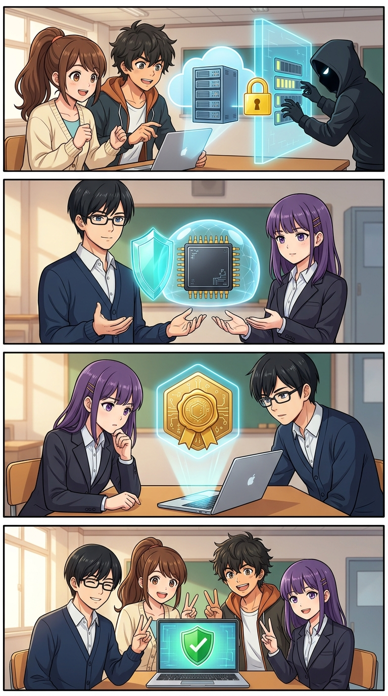
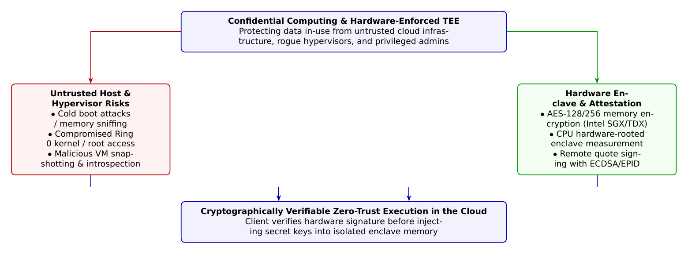

🎨 4コマ漫画挿絵（文字なし）
AI高解像度生成
▲ 【挿絵】青葉台高校 情報科学部＆帝都科学大学サイバーディフェンス・ラボでの実践シーン
📖 小説本文
### 1. 覗き見されるメモリ空間
「悠真先輩、パブリッククラウドの共有ホストで動かしている機械学習推論VMのログに、不穏なハイパーバイザー呼び出し（vmexit）が頻発しています！」 葵がマルチモニタの監視コンソールを指差した。
「通常、クラウド上でデータを処理するとき、ストレージ上の『保存時（At-Rest）』やネットワーク通信の『転送時（In-Transit）』はTLSやAESで強固に暗号化されている。でも、CPUが計算を実行するまさにその瞬間——『使用時（In-Use）』のDRAM主記憶上では、データは平文で展開されるんだ」 悠真が静かに解説を始めた。
蓮が腕を組みながらモニターを睨む。 「つまり、もしクラウド事業者の悪意ある特権管理者や、ホストOSを侵害した攻撃者がいれば、Cold Boot攻撃やDMA（Direct Memory Access）、あるいはハイパーバイザーのメモリダンプによって、金融取引データや患者のカルテ、モデルの知的財産が丸裸で盗まれてしまうわけですね」
「そうだ。だからこそ、ゼロトラストの思想をハードウェアの最深部にまで押し進める技術——『コンフィデンシャル・コンピューティング（Confidential Computing）』が必要になる」
---
### 2. ハードウェア要塞：暗号化エンクレーブ（TEE）
結衣がホワイトボードの前に立ち、プロセッサの内部構造図を書き出した。 「Intel SGXやAMD SEV-SNP、Intel TDXといった最新CPUに組み込まれたTEE（Trusted Execution Environment）は、プロセッサ内部に『エンクレーブ』と呼ばれる隔離された実行環境を構築します」
結衣の数式とアーキテクチャ解説が続く。 「CPUのメモリコントローラ内部にハードウェア暗号化エンジン（MKTMEやAES-XTS回路）が配置されていて、エンクレーブ用のメモリアドレス空間（EPC: Enclave Page Cache）へ書き込まれるデータは、バス上に出る直前にナノ秒単位で暗号化されます。 たとえ特権Ring 0のカーネルやホストOS、ハイパーバイザーであっても、エンクレーブ内部のメモリ領域を読み取ろうとすれば、ランダムな暗号化ビット列しか見えません。物理的にDRAMスロットにプローブを当ててもデータは解読できないのです」
「完全なブラックボックス要塞ね……！」 葵が感嘆の声を漏らした。
---
### 3. 遠隔の信憑：リモートアテステーションの幾何学
「でも先輩、クラウド上で動いているエンクレーブが、本当に改ざんされていない本物のコードなのか、どうやって手元のクライアントから確かめるんですか？」 蓮が核心を突いた。
「それこそが暗号学的証明プロトコル——『リモートアテステーション（Remote Attestation）』だ」 悠真が端末のターミナルを叩いてアテステーション・レポートを展開した。
1. **測定（Measurement）**: エンクレーブが起動する際、CPUハードウェアが初期バイナリとコード構造のSHA-256ハッシュ値を計算し、セキュアな測定レジスタ（MRSIGNER / MRENCLAVE）に記録する。 2. **署名（Attestation Quote）**: CPUシリコン製造時にヒューズとして焼き付けられた製造元固有の秘密鍵（Root Provisioning Key）を起点に、エンクレーブの測定値と乱数ノンスを含んだレポートに対してハードウェア署名（ECDSA QuoteまたはEPID署名）を発行する。 3. **検証（Verification）**: クライアントはCPUメーカー（Intel/AMD）の公開検証サービスを通じて署名を照合。改ざんのない正規のハードウェアTEE内で自社コードが稼働していることを数学的に確証する。
「クライアントはこのアテステーション検証が成功した後に初めて、TLSハンドシェイクを通じて復号鍵や機密データをエンクレーブへ安全に注入（Secret Provisioning）するんだ」
---
### 4. 信頼の境界線を越えて
蓮が自作したTEE検証スクリプトを走らせた。 「リモートアテステーション・クォートの受信確認……CPUファームウェアTCBレベル検証パス、MRENCLAVEダイジェスト一致！ 署名検証完了です！」
葵が安堵の笑顔を浮かべる。 「これで、クラウド事業者のインフラを一切信用しなくても、私たちだけの暗号化された安全な島（エンクレーブ）の中で機密処理を完結できるわね！」
ラボの画面には、外側のハイパーバイザーによるメモリ覗き見試行が完全にブロックされ、暗号化エンクレーブ内部で高速かつセキュアに推論ジョブを完走する美しいステータスが表示されていた。 物理的なサーバの所有権を超え、数学とシリコンがもたらす揺るぎない確証。それこそが、クラウド時代の新たな信頼の礎だった。
📊 セキュリティ構造図解 (TikZ LuaLaTeX生成)
国家安全基準・工学図解
▲ 【技術構造図】IPAデジタルスキル標準・国際規格に準拠した仕組みのモデル化